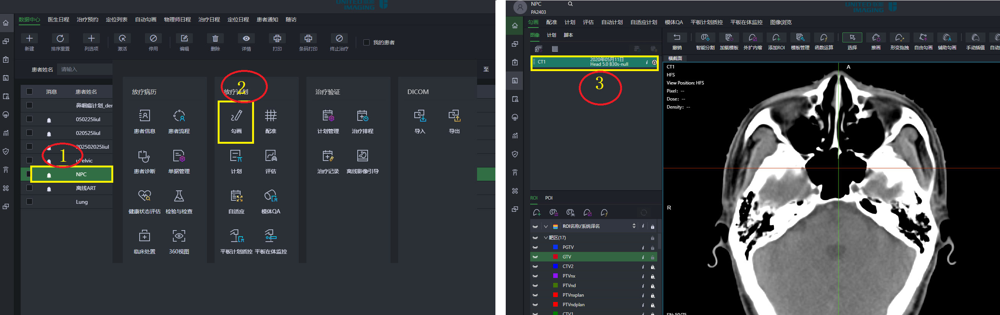

扫码看短视频讲解
一、工作流程
数据传输流程
勾画工作流程
图像融合+勾画工作流程
二、勾画
2.1 ☞ 双击加载图像
- 1.选择患者，双击进入勾画界面
- 2.选择CT序列，双击加载图像

2.2 ☞ 调用模板做勾画
- 1.点<加载模板>
- 2.选择模板
- 3.确认后，系统会按模板指定的方式画出ROI，<智能分割支持>为"是"的ROI会自动画出来，"否"的则生成空结构。
- <函数支持>为"是"的ROI，会自动带上关联关系
- 推画，按键盘“+” “-”号缩放画刷的直径，按字母 A 可在同层做并行勾画
- 形变拖拽，可做"点线式"勾画，线条首尾相连闭合轮廓线，在线条上拖拽做局部修改
2.4 ☞ 辅助勾画
- 1.激活辅助勾画
- 2.用勾画工具连续勾画两层，翻到第三层时会出现投影（会根据层间灰度变化自动形变）
- 3.按Q键将投影变为轮廓线，用<推画>或<形变拖拽>等工具修改轮廓
2.5 ☞ 外扩内缩
- 1.选择“外扩内缩”，图中两个地方都可以打开
- 2.选择1个"源"
- 3.设置外扩/内缩的数值
- 4.可选不进入（避开）某个结构，并设置间距
- 5.可选不超出皮肤，并设置缩进皮肤的间距
- 6.将修改结果生成新结构或覆盖到已存在的结构上
2.6 ☞ 关联更新
- ROI之间的逻辑关系可被保存在模板内，修改原结构后，关联结构可同步更新
2.7 ☞ 靶区自动勾画
- 注意部分靶区有参考依赖，如：鼻咽癌的CTV1/CTV2/两个GTVnd，都以来GTVnx，需要先手动把GTVnx画出来，才可自动画这4个靶区
三、图像融合
3.1 ☞ 导入MR序列，方式一：从PACS查询获取
- 0.需提前在PACS端添加我方AE信息，并开通Query/Retrieve权限
- 1.选择患者，双击，<导入>
- 2.选择数据来源为,选择PACS
- 3.按ID号或姓名检索患者。选择序列，移动序列
- 4.导入MR序列
☞ 导入MR序列，方式二：从其它系统发过来
- 0.需在其它指定的系统添加我方AE信息，并把图像发过来
- 1.选择患者，双击，<导入>
- 2.选择数据来源为<服务器>
- 3.按ID号或姓名检索患者。选择序列，确定
- 4.选择患者信息，选择图像序列，导入
- 5.确认患者信息四要素（影像的检查号跟放疗的ID号不一定对应，需确认）
3.2 ☞ 配准
- 1.进入<配准>页面
- 2.在CT序列上双击加载CT
- 3.选择一个MR序列，点右键，<添加为刚性配准>。系统会做一次自动配准。
- 4.如果配准效果不理想，可使用<平移>和<旋转>，手动粗调，让图像层面大致对齐，然后点<执行刚性>尝试让系统自动配准。也可手动精细调整做最终结果
- ·配准后的结果会实时保存

3.3 ☞ 对照勾画
- 1.用<布局管理>调成2窗口对照，把混合窗的滑动条拉到左侧，只显示CT图像
- 2.添加ROI
- 3.使用勾画工具画靶区，此时主副图上的光标会同步显示
3.4 ☞ 多视窗对照检查
- 1.在<布局管理>中切换为多视窗显示
- 2.把配准关系拖到另外的视窗
- 3.在多视窗中切换MR序列

四、导出图像
- 1.切换到DICOM，导出
- 2.导出路径选择，选择pinnacle
- 3.导出
×